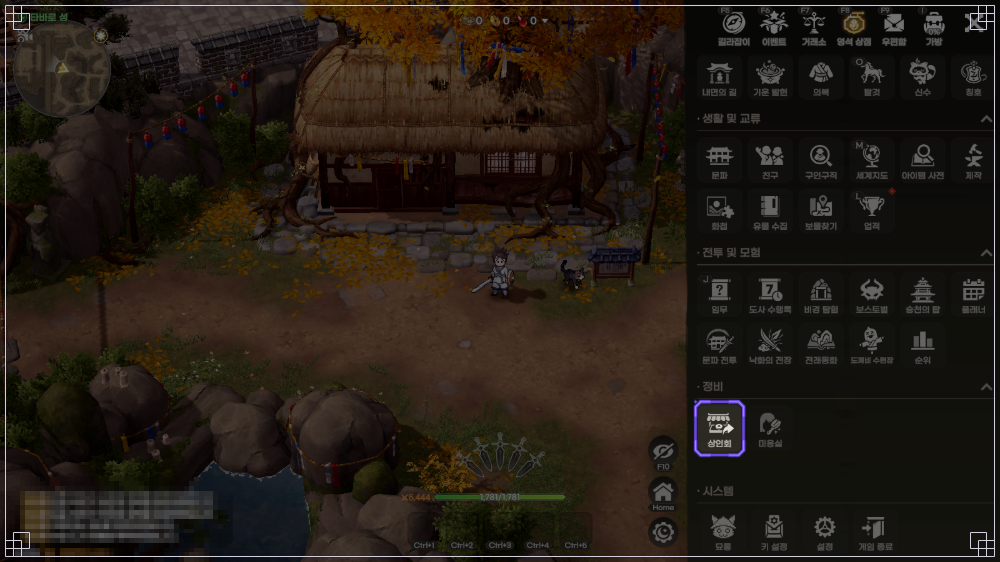
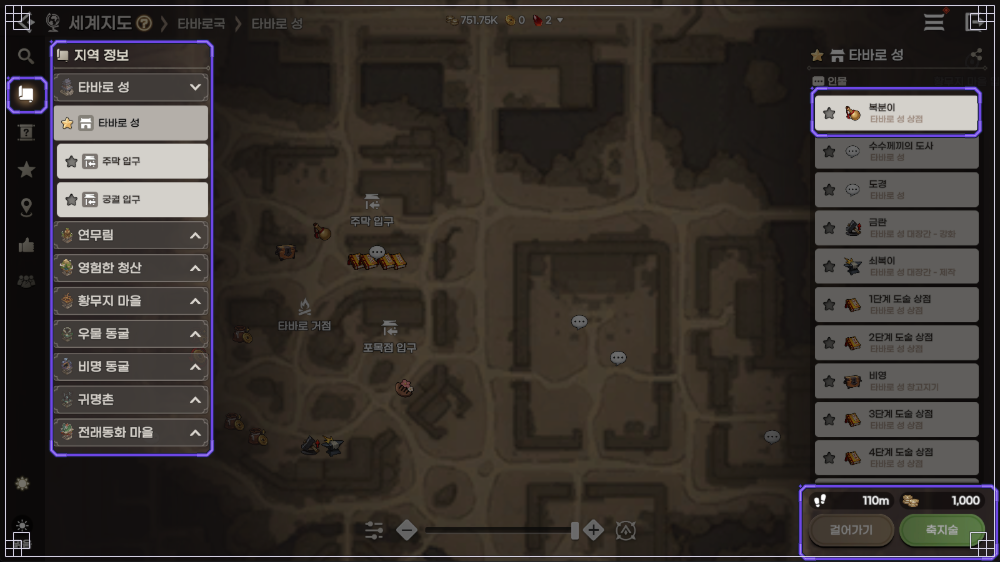
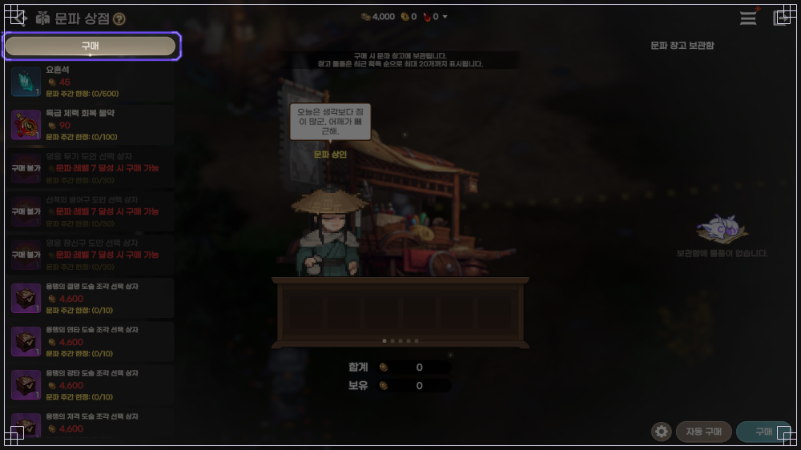
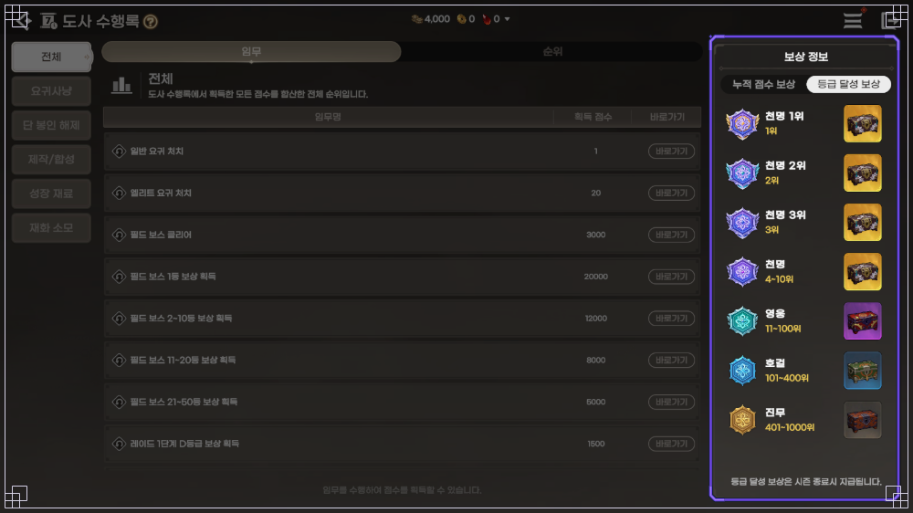
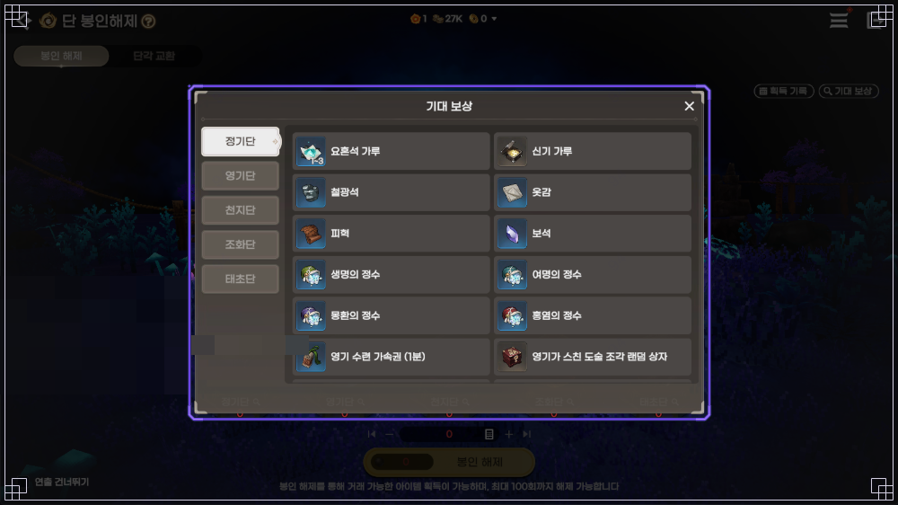
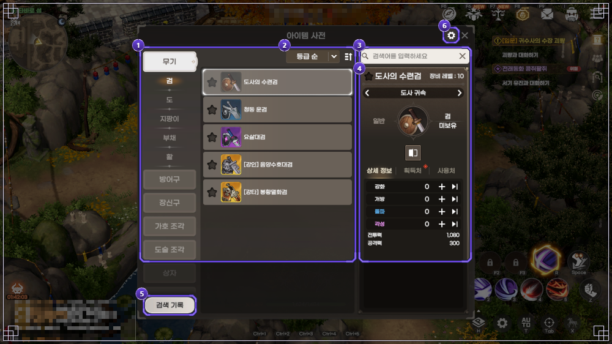
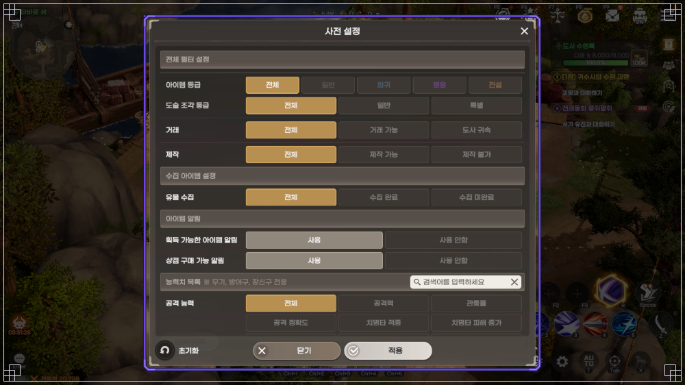
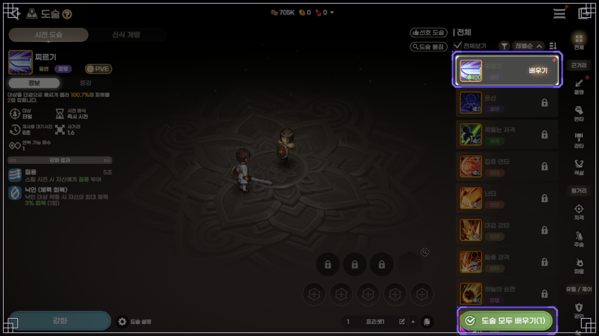

도깨비의세계 도술 조각 구매, [첫걸음] 도술 구매의 자격 증명 임무부터 열려요
도깨비의세계 도술 조각 구매는 [첫걸음] 도술 구매의 자격 증명 임무가 조건이고, 2026년 10월 13일 공식 상인 안내 기준 도경 판매 목록에 오른 도술 스타일은 파멸·강타·연타·저격 4종이에요. 이 목록 밖의 스타일은 문파 상점·도사 수행록·단 봉인해제 같은 콘텐츠에서 조각을 모으는 구조예요.
상점이 열리는 조건과 도경이 파는 종류, 나머지 스타일을 모으는 경로까지 스타일별 표로 한 번에 묶어 봤어요.
도술 조각은 어디서 사고, 뭘 해야 상점이 열리나요?
도술 조각은 타바로 성의 도경(도술 상점)에서 사요. 구매 조건은 '[첫걸음] 도술 구매의 자격 증명' 임무이고, 공식 TIP '해월이와 함께하는 도청년 도전!'은 50레벨을 달성해 타바로 성에 들어간 도사에게 [첫걸음] 임무부터 하라고 안내해요. [첫걸음] 임무는 도술 구매 말고도 열어 주는 콘텐츠가 있고, 서사 임무 보상으로도 이따금 도술 조각이 나온다고 해요.
상점을 찾는 길은 두 갈래예요. 메뉴의 정비 구역에서 상인회를 누르면 타바로 성 상인 위치로 바로 이동하고, 상인회 안에서 도경은 도술 상점, 라심은 금전만 받는 도술 금전 상점으로 나뉘어 있어요.

메뉴 아래쪽 정비 구역에서 보라색 테두리로 강조된 아이콘이 상인회예요.
이미지: 도깨비의세계 공식 포럼 가이드 7988 상인회 화면
다른 한 갈래는 세계지도예요. 타바로 성을 열면 오른쪽 인물 목록에서 도경을 찾을 수 있고, 같은 목록에 1단계부터 4단계까지 도술 상점 항목도 따로 올라 있어요. 둘 중 편한 쪽으로 들어가면 되죠.

타바로 성 인물 목록에 도경과 1~4단계 도술 상점 항목이 보여요.
이미지: 도깨비의세계 공식 포럼 가이드 7903 세계지도 화면
도경에서는 어떤 도술 조각을 파나요?
도경에서는 파멸·강타·연타·저격 네 스타일의 도술 조각을 살 수 있고, 달성한 전투력이 높아질수록 살 수 있는 종류가 늘어나요. 공식 TIP '타바로 성 인물들을 소개해 드려요!'는 도경이 1단계부터 4단계까지의 도술 조각을 판다고 적었는데요, 앞 그림의 인물 목록에도 '1단계 도술 상점'부터 '4단계 도술 상점'까지 항목이 따로 있더라고요. 전투력에 따라 종류가 늘어난다는 안내와 이어지는 구조로 보이네요. 라심은 금전만 받는 상인이고 '특별한 도술 조각'을 팝니다.
공식 안내에 따로 적혀 있지 않아요. 임무 창 서사 탭과 도경의 도술 상점 창에서 직접 볼 수 있습니다.
상점에서 못 사는 도술은 어디서 얻나요?
공식 상인 안내 기준 도경 판매 목록에 오른 건 파멸·강타·연타·저격 4종뿐이라, 목록 밖 스타일은 문파 상점·도사 수행록·단 봉인해제 같은 콘텐츠 보상에서 도술 조각을 모아야 해요. 공식 도술 가이드가 도술 상점에서 구입할 수 없다고 명시한 건 [척살]·[주술]·[강인]이고, 절명·기동·기만·헌신·제압은 도경 판매 목록에 오르지 않은 스타일이에요.
2026년 10월 13일 공식 확률 공지·가이드·TIP 기준 스타일별 획득처
| 스타일(계열) | 도경 | 문파 상점 | 단 봉인해제 | 낙화의 전장 | 미누 | 도사 수행록 | 쿠폰 상자 |
|---|---|---|---|---|---|---|---|
| 파멸(원거리) | ○ | ◎ | ○ | – | ○ | ○ | – |
| 강타(근거리) | ○ | ◎ | ○ | ○ | ○ | ○ | – |
| 연타(근거리) | ○ | ◎ | ○ | ○ | ○ | ○ | – |
| 저격(원거리) | ○ | ◎ | ○ | ○ | ○ | ○ | – |
| 절명(근거리) | – | ◎ | ○ | ○ | ○ | ○ | – |
| 척살(근거리) | – | – | – | – | – | ○ | – |
| 주술(원거리) | – | – | – | ○ | ○ | ○ | ◎ |
| 강인(유틸) | – | ◎ | – | ○ | – | ○ | ◎ |
| 헌신(유틸) | – | ◎ | – | ○ | – | ○ | ◎ |
| 기동(유틸) | – | – | ○ | – | – | ○ | ◎ |
| 기만(제어) | – | – | – | – | ○ | ○ | ◎ |
| 제압(제어) | – | – | ○ | – | – | – | – |
○는 그 경로에서 나오거나 살 수 있다는 뜻이고, ◎는 선택 상자로 골라 받는다는 뜻이에요. –는 공개된 안내에 나오지 않는다는 표시예요. 단 봉인해제의 제압은 태초단 전용 상자 기준입니다.
표에서 척살 칸은 도사 수행록 한 곳만 ○예요. 주술·강인도 수행록 상자에서 나오고 낙화의 전장 랜덤 상자에도 있어요. 공식 가이드는 단 봉인해제도 함께 꼽지만, 확률 공지에 구성이 나온 단 봉인해제 상자에는 이 셋이 없거든요.
수행록 상자에서 일반 도술은 대부분 종류마다 약 1.5156%인데, 척살 일반 4종과 기동 일반 5종은 0.5052%로 3분의 1 수준이에요(10월 8일 적용 확률 공지 기준).
낙화의 전장에서는 낙화의 증표로 일반·특별 도술 조각 선택 상자와 랜덤 상자를 바꿀 수 있어요(공식 TIP '도깨비의세계에서 사용되는 재화를 확인해 보세요!' 기준). 미누 상점에서 별의 조각으로 바꾸는 도술 조각 상자는 전래동화 글에서 따로 다뤘어요.
문파 상점·도사 수행록·단 봉인해제, 어디부터 보면 되나요?
스타일을 골라서 받고 싶다면 문파 상점의 선택 상자, 순위로 받는 보상은 도사 수행록, 상자를 열어 보는 확률형은 단 봉인해제 쪽이에요.
문파 상점은 문파에 가입해 있어야 열리고, 모든 상품을 용맹의 증표로 사요. 절명·연타·강타·저격·강인·파멸·헌신 7개 스타일별로 '용맹의 ○○ 도술 조각 선택 상자'가 따로 있고, 상품마다 주간 구매 한도가 있어요. 화면 속 선택 상자는 하나에 4,600, 문파 주간 한정은 0/10으로 나와요.

문파 상점 구매 탭 아래쪽에 용맹의 도술 조각 선택 상자가 줄지어 있어요. 테스트 환경 화면이라 숫자는 바뀔 수 있어요.
이미지: 도깨비의세계 공식 포럼 가이드 7884 문파 상점 화면
도사 수행록은 주간 순위로 도사의 도술 조각 랜덤 상자(귀속)를 받는 곳이에요. 시즌은 한 주이고 수요일 05:00에 보상이 나가며 순위 초기화도 그때 됩니다.
- 천명 1위 150개, 2위 120개, 3위 90개
- 천명 4~10위 70개
- 영웅 11~100위 50개, 호걸 101~400위 30개
- 진무 401~1000위 10개

오른쪽 보상 정보의 등급 달성 보상 탭이에요. 하단에 시즌 종료 시 지급된다고 적혀 있어요.
이미지: 도깨비의세계 공식 포럼 가이드 7941 도사 수행록 화면
단 봉인해제는 정기단부터 태초단까지 단마다 걸린 도술 조각 상자가 달라요. 공식 단 봉인해제 확률 공지 기준으로 정기단과 영기단은 '영기가 스친 도술 조각 랜덤 상자', 천지단은 절명·저격·연타·강타·파멸·기동 스타일별 '영기가 스친' 상자, 조화단은 같은 여섯 스타일의 '영기 품은' 상자이고, 태초단에는 특별한 도술 조각과 제압 도술 조각 상자가 들어 있습니다.

정기단 탭의 기대 보상이에요. 맨 아래에 영기가 스친 도술 조각 랜덤 상자가 보여요.
이미지: 도깨비의세계 공식 포럼 가이드 7838 단 봉인해제 화면
아이템 사전에서 획득처를 어떻게 확인하나요?
메뉴의 아이템 사전에서 도술 조각 항목을 열고 조각을 고르면, 상세 정보·획득처·사용처 탭으로 어디서 나오는지 바로 볼 수 있어요. 표에서 애매한 칸이 보이면 이 획득처 탭으로 직접 열어 보는 게 가장 빠르고, 공식 TIP도 사전의 획득처를 보라고 안내합니다.

왼쪽 카테고리 아래쪽의 도술 조각 항목을 눌러 획득처 탭을 확인하는 화면이에요.
이미지: 도깨비의세계 공식 포럼 가이드 7907 아이템 사전 화면
오른쪽 위 톱니바퀴의 사전 설정에서는 도술 조각 등급을 일반·특별로 걸러 볼 수 있고, 같은 설정 창에 '상점 구매 가능 알림' 항목도 있어요.

사전 설정에서 도술 조각 등급 필터와 상점 구매 가능 알림 항목을 볼 수 있는 화면이에요.
이미지: 도깨비의세계 공식 포럼 가이드 7907 아이템 사전 화면
조각이 모이면 어떻게 배우고, 남는 조각은 어디에 쓰나요?
도술 조각이 100개 모이면 도술 화면에서 '배우기'를 눌러 도술을 배우고, 이미 배운 도술의 중복 조각은 그 도술의 각성에 써요. 각성은 도술마다 조각 100개씩이 따로 들어가고, 조각이 여러 도술에 걸쳐 충족됐다면 '도술 모두 배우기'로 한 번에 배울 수 있어요.

목록 맨 위 도술의 '배우기' 버튼과 아래쪽 초록색 '도술 모두 배우기' 버튼이에요.
이미지: 도깨비의세계 공식 포럼 가이드 7834 도술 화면
도깨비의세계 도술 조각 구매 자주 묻는 질문
Q. 도술 조각이랑 도술 강화 요령서는 같은 건가요?
달라요. 요령서는 복분이(잡화)와 소분(금전), 단 봉인해제의 단각 교환에서 사고 스타일 전체 레벨을 한꺼번에 올리는 아이템이고, 도술 조각은 도술을 배우거나 각성할 때 쓰는 재료예요. 강화 쪽은 무기 추천과 장비 성장 순서 글에서 이어서 볼 수 있습니다.
Q. 쿠폰으로 받는 도술 조각 선택 상자에서는 뭘 고르면 되나요?
공식 TIP 기준으로 강인·헌신·주술·기만·기동 중 하나를 고르는 상자이고, 조각 100개 구성이라 고르는 즉시 그 도술을 배울 수 있어요. 이 다섯은 도경 판매 목록에 오르지 않은 스타일이라 상점 구매와 겹치지 않는 쪽으로 쓰기 좋습니다. 쿠폰 코드와 마감일은 쿠폰 정리 글에 있어요.
도깨비의세계 도술 조각 구매 정리
그래서 순서를 정한다면 도경 4종 안에 원하는 도술이 있는지 먼저 보고, 없다면 스타일을 직접 골라 받는 문파 상점 선택 상자를 앞에, 확률형인 단 봉인해제와 순위 보상인 도사 수행록은 뒤에 두는 쪽이 덜 헤맬 것 같아요. 모은 조각이 어느 경로에서 100개를 채울지 지켜보는 재미도 쏠쏠할 것 같네요.
✔ 도깨비의세계 도술 같이 보기 좋은 내용
· 도깨비의세계 직업 없다? 도술 스타일 12가지 4계열로 조합하는 법, 신식 개방 조건까지
· 도깨비의세계 도술 티어 2026년 10월 11일 기준, 도술 스타일 12종 사냥 보스 PvP 용도별 추천
· 도깨비의세계 도술 조합 추천 유저 추천 빌드 7개, 암습 빌드 시전 순서와 광역 사냥 빌드
참고한 곳
· 게임 가이드 도술(7834)
· 해월이와 함께하는 도청년 도전! TIP(14486)
· 상인회 게임 가이드(7988)
· 타바로 성 인물들을 소개해 드려요! TIP(8072)
· 도깨비의세계에서 사용되는 재화를 확인해 보세요! TIP(8076)
· 랜덤 상자 확률(9262)
· 단 봉인해제 확률(9257)